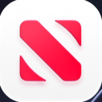

Every student.
Every device.
Kosher.
מכשיר כשר לכל תלמיד · מהטלפון ועד הטאבלט
Filters try to catch what's bad. Kosher Switch only lets in what's good. The phones and tablets your students already own become kosher devices, the school decides what's allowed, and the code stays at home with the parents.




- 📞 Phone
- 💬 Messages
- 📖 Siddur
- 🗓 Luach


Phones, tablets, keypad phones and iPhones. One set of rules for the whole class.
Nothing on the device you don't know about. Not a list of blocked websites to keep up with. Only the apps your school approved exist on the device. Everything else is gone.
A phone policy
that finally works.
Today a phone policy is a form parents sign. With Kosher Switch, it's the device itself.
The school decides
Calls, messages, maps, a siddur: the school chooses the apps. Every student gets the same rules, and nothing else.
No new device to buy
The device the student already has becomes the kosher one.
Seen in one second
The kosher home screen and the seal make a kosher device easy to recognize.
Can't be talked around
Another browser, a VPN, a settings trick: none of them work.
Made for a Jewish school
A siddur, tehillim, a luach and zmanim, in Hebrew and English.
Private by design
No account and no tracking. Nothing about the student is sent anywhere: Kosher Switch only decides what's on the device.
The others leave
a door open.
Every other option makes the school give something up. Kosher Switch doesn't.
| Kosher Switch | Filter apps | Kosher flip phones | Wi-Fi & DNS filters | |
|---|---|---|---|---|
| Works on the student's own device | ✓ | ✓ | ✕ | ✓ |
| Only school-approved apps on the device | ✓ | ✕ | ✓ | ✕ |
| No open browser | ✓ | ✕ | ✓ | ✕ |
| Student can't switch it off | ✓ | ✕ | ✓ | ✕ |
| Protected on mobile data, outside school | ✓ | ✓ | ✓ | ✕ |
| WhatsApp, Waze and banking when allowed | ✓ | ✓ | ✕ | ✓ |
| Phones and tablets | ✓ | ✓ | ✕ | ✓ |
| Siddur, luach and zmanim built in | ✓ | ✕ | ✕ | ✕ |
| Calm kosher home screen | ✓ | ✕ | ✕ | ✕ |
| No second device to buy | ✓ | ✓ | ✕ | ✓ |
| Score | 10/10 | 5/10 | 4/10 | 4/10 |
Based on how each type of product usually works.
Ready before the first bell.
The school chooses
Pick the apps students may use, and share the list with parents.
Parents install
Kosher Switch goes on the student's phone or tablet, in a few minutes.
Parents set the code
They pick the school's apps and a code the student never sees.
One tap: kosher
The device turns kosher and stays that way, even after a restart.
What's here,
and what's coming.
🔑 Parents hold the key
Only the code opens the device. The student never knows it.
📖 Siddur, luach and zmanim
Built into every Kosher Switch device, in Hebrew and English.
🏷️ Your school's name
"This device belongs to" your school, on every lock screen.
▦ One school QR code
Scan once, and the device gets the school's app list.
🗓️ Setup day
Devices set up together with parents and staff, in one afternoon.
For school staff.
Which devices does it work on?
Android phones and tablets with Android 10 or newer (Samsung, Pixel, Xiaomi and more) and iPhone. iPad is coming later.
Do families need to buy a new device?
No. Kosher Switch turns the phone or tablet the student already has into a kosher device.
Who holds the code?
The parents. The student never knows it, so only a parent can open the device again.
Does the school see students' messages or photos?
No. Kosher Switch sends nothing about the student anywhere. It only decides what's on the device.
Can students remove it or get around it?
No. In kosher mode, Settings, installing and deleting are locked, and it survives restarts. On Android, the only way out is a full factory reset with the phone's buttons, which erases the whole phone, so it can't happen unnoticed.
What if a family loses the code?
The code is never sent anywhere, so nobody can read it back, not even us. On Android, a factory reset clears it; on iPhone, a parent's Family Sharing account can remove the app. That's why we suggest parents keep the code written down somewhere safe.
Does it need internet to stay kosher?
No. Kosher mode lives on the device itself and works with or without Wi-Fi or mobile data, at school, at home and on the bus.
Can different classes have different rules?
Today each family chooses the apps from the school's list. Different lists per class are part of the school edition we're building with our first schools.
What about school trips or exams?
Parents can leave kosher mode with their code for a moment, for example to install a trip app, and turn it back on with one tap.
How long does setup take?
A few minutes per device. On Android it's a one-time setup with a QR code or a computer; on iPhone it's all inside the app. We can help at a setup evening at the school.
What does it cost for a school?
Kosher Switch is free for families today. The school edition will be priced per student per year, and the first schools get special terms. Ask us.
Do teachers need training?
No. Staff only need to recognize a kosher device: the calm kosher home screen and the Kosher Switch seal.
Is it a kashrut certification?
No. Kosher Switch is a tool. Which apps are allowed is up to the school and its rabbonim.
מה זה Kosher Switch לבתי ספר?
Kosher Switch הופך את הטלפון או הטאבלט שכבר יש לתלמיד למכשיר כשר. בית הספר קובע אילו אפליקציות מותרות, ההורים מחזיקים את הקוד, ואין על המכשיר שום דבר שבית הספר לא יודע עליו. כולל סידור, תהילים ולוח עם זמני היום.
Your school could be first.
Kosher Switch for Schools is in the works. The first schools get special terms and a setup made together with their staff and parents.
✉️ kosherswitch@outlook.com